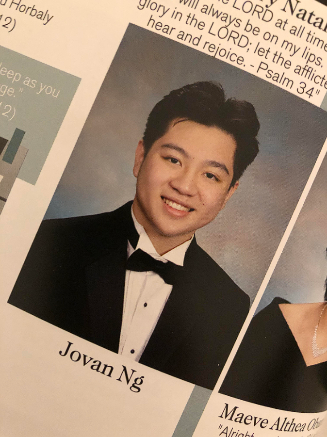

Welcome to My Portfolio
A simple showcase of my projects and skills.
About Me

Hi! I’m Jovan Ng, a third-year Biomedical Engineering and Data Science student at the University of California, Irvine. As a member of the Campuswide Honors Collegium, I’m deeply committed to academic excellence and creative problem-solving. My passion lies in leveraging technology to tackle real-world challenges—whether through analyzing data, optimizing processes, or designing innovative solutions.
Over the years, I’ve developed powerful technical skills in MATLAB, Python, and C++, complemented by hands-on experience with tools like SolidWorks and LabVIEW. My projects range from simulating distributed systems and designing cost-effective medical devices to applying image-processing techniques for early glaucoma detection. These experiences have sharpened my ability to bridge theoretical concepts and practical applications, as well as bridge the gap between the fields of computer science and biomedical applications!
Feel free to connect with me at jovanhng@gmail.com or reach out if you’d like to collaborate on an exciting project!